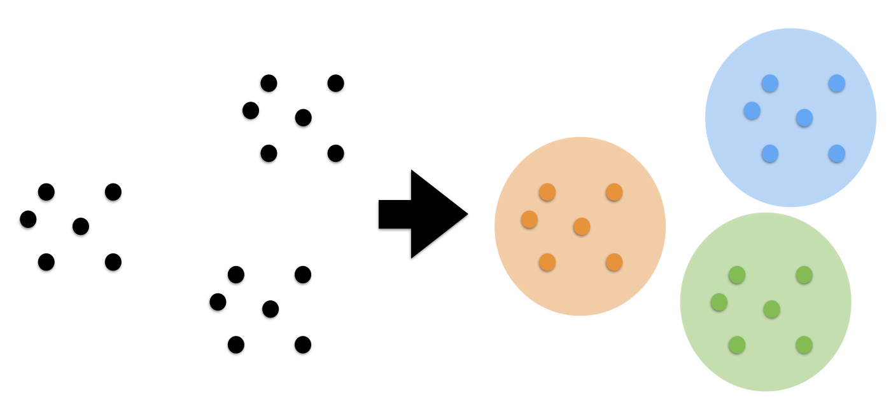
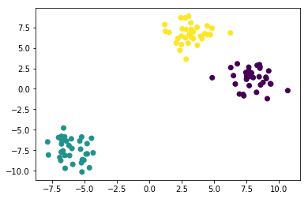
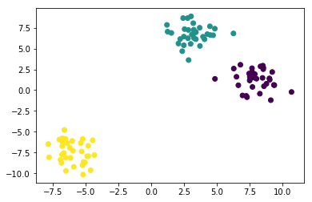
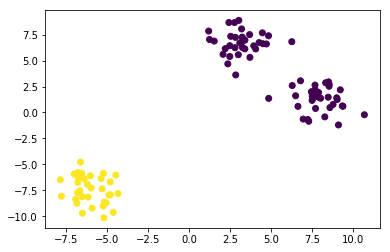
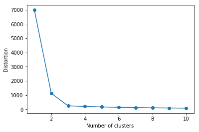
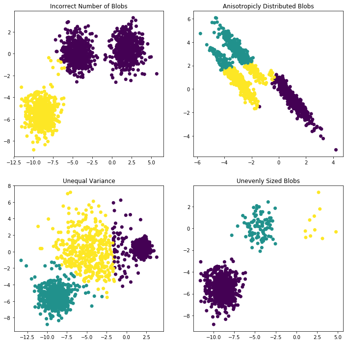

scikit-笔记07:非监督学习clustering
Table of Contents
- 1. Unsupervised Learning Part 2 – Clustering
- 1.1. K-means
- 1.1.1. what is K-means
- 1.1.2. creating
- 1.1.3. fitting and predict
- 1.1.4. comparing to true labels using confusion_matrix and accuracy_score
- 1.1.5. comparing to true labels using adjusted_rand_score
- 1.1.6. short-comming-1 of K-means
- 1.1.7. The Elbow Method: solve the short-coming-1 using
km.inertia_ - 1.1.8. short-comming 2~4 of K-means
- 1.2. Some Notable Clustering Routines
- 2. Misc tools
%matplotlib inline import matplotlib.pyplot as plt import numpy as np
1 Unsupervised Learning Part 2 – Clustering
1.0.1 what is clustering
Clustering is the task of gathering samples into groups of similar samples according to some predefined similarity or distance (dissimilarity) measure, such as the Euclidean distance.

In this section we will explore a basic clustering task on some synthetic and real-world datasets.
1.0.2 application of clustering
Here are some common applications of clustering algorithms:
- Compression for data reduction
- Summarizing data as a reprocessing step for recommender systems
- Similarly:
- grouping related web news (e.g. Google News) and web search results
- grouping related stock quotes for investment portfolio management
- building customer profiles for market analysis
- Building a code book of prototype samples for unsupervised feature extraction
1.1 K-means
1.1.1 what is K-means
Let's start by creating a simple, 2-dimensional, synthetic dataset:
In the scatter plot above, we can see three separate groups of data points and we would like to recover them using clustering – think of "discovering" the class labels that we already take for granted in a classification task.
Even if the groups are obvious in the data, it is hard to find them when the data lives in a high-dimensional space, which we can't visualize in a single histogram or scatterplot.
Now we will use one of the simplest clustering algorithms, K-means. This is an
iterative algorithm(or called lazy algorithm) which searches for three cluster
centers such that the distance from each point to its cluster is minimized. The
standard implementation of K-means uses the Euclidean distance, which is why we
want to make sure that all our variables are measured on the same scale if we
are working with real-world datastets. In the previous notebook, we talked about
one technique to achieve this, namely, standardization.
Question: what would you expect the output to look like?
1.1.2 creating
from sklearn.cluster import KMeans kmeans = KMeans(n_clusters=3, random_state=42)
We can get the cluster labels either by calling fit and then accessing the
labels_ attribute of the K means estimator, or by calling fit_predict. Either
way, the result contains the ID of the cluster that each point is assigned to.
1.1.3 fitting and predict
labels = kmeans.fit_predict(X)
labels
array([1, 2, 1, 2, 0, 2, 1, 2, 2, 2, 2, 1, 0, 1, 1, 2, 0, 2, 2, 2, 0, 0, 1, 0, 1, 2, 2, 0, 0, 2, 2, 1, 2, 1, 2, 1, 1, 2, 1, 2, 1, 1, 0, 1, 2, 0, 0, 0, 0, 1, 0, 0, 0, 1, 1, 1, 0, 2, 2, 0, 2, 1, 2, 1, 2, 2, 2, 0, 2, 1, 1, 0, 1, 0, 0, 2, 0, 1, 2, 0, 0, 0, 2, 0, 1, 1, 1, 0, 0, 0, 1, 2, 1, 0, 2, 1, 0, 1, 0, 0], dtype=int32)
np.all(y == labels)
False
Let's visualize the assignments that have been found
1.1.4 comparing to true labels using confusion_matrix and accuracy_score EXERCISE
plt.scatter(X[:, 0], X[:, 1], c=labels);

Compared to the true labels:
plt.scatter(X[:, 0], X[:, 1], c=y);

Here, we are probably satisfied with the clustering results. But in general we might want to have a more quantitative evaluation. How about comparing our cluster labels with the ground truth we got when generating the blobs?
from sklearn.metrics import confusion_matrix, accuracy_score print('Accuracy score:', accuracy_score(y, labels)) print(confusion_matrix(y, labels)) np.mean(y == labels)
0.34000000000000002
But we actually do 100% correctly, only due to different label number, we get only 33% correctly:
- standard answer: [2,1,3]
- we give: [1,2,3]
But for every elements we group them correctly.
EXERCISE: After looking at the "True" label array y, and the scatterplot and labels above, can you figure out why our computed accuracy is 0.0, not 1.0, and can you fix it?
1.1.5 comparing to true labels using adjusted_rand_score
Even though we recovered the partitioning of the data into clusters perfectly, the cluster IDs we assigned were arbitrary, and we can not hope to recover them. Therefore, we must use a different scoring metric, such as adjusted_rand_score, which is invariant to permutations of the labels:
from sklearn.metrics import adjusted_rand_score adjusted_rand_score(y, labels)
1.0
1.1.6 short-comming-1 of K-means
specify the number of clusters
One of the "short-comings" of K-means is that we have to specify the number of clusters, which we often don't know apriori. For example, let's have a look what happens if we set the number of clusters to 2 in our synthetic 3-blob dataset:
kmeans = KMeans(n_clusters=2, random_state=42) labels = kmeans.fit_predict(X) plt.scatter(X[:, 0], X[:, 1], c=labels); kmeans.cluster_centers_
array([[ 5.60396367, 3.94805847], [-6.00060712, -7.45465799]])

1.1.7 The Elbow Method: solve the short-coming-1 using km.inertia_
The Elbow method is a "rule-of-thumb" approach to finding the optimal number of
clusters. Here, we look at the cluster dispersion for different values of k:
dispersionIn statistics, dispersion (also called variability, scatter, or spread) is the extent to which a distribution is stretched or squeezed. Common examples of measures of statistical dispersion are the variance, standard deviation, and interquartile range
here we use km.inertia_ describe the dispersion(spread)
km.inertia_: float, Sum of squared distances of samples to their closest cluster center.
inertia_is one attribute of km model after fitting training dataset, it will give you some 'feeling' of connection strength of elements inside each group, which returned as 'label' by km model after fitting training dataset.
distortions = [] for i in range(1, 11): km = KMeans(n_clusters=i, random_state=0) km.fit(X) distortions.append(km.inertia_) plt.plot(range(1, 11), distortions, marker='o') plt.xlabel('Number of clusters') plt.ylabel('Distortion') plt.show()

Then, we pick the value that resembles the "pit of an elbow." As we can see, this would be k=3 in this case, which makes sense given our visual expection of the dataset previously.
1.1.8 short-comming 2~4 of K-means
Clustering comes with assumptions:
A clustering algorithm finds clusters by making assumptions with samples should be grouped together. Each algorithm makes different assumptions and the quality and interpretability of your results will depend on whether the assumptions are satisfied for your goal.
For K-means clustering, the model is that all clusters have:
- equal variance.
- spherical variance.
- balanced sized blobs
Summarizing: short-commings of K-means:
So we have 4 short-comings of K-means:
- Incorrect number of clusters <<< solved by elbow-method
- Anisotropicly distributed data
- Different variance
- Unevenly sized blobs
In general, there is no guarantee that structure found by a clustering algorithm has anything to do with what you were interested in.
We can easily create a dataset that has non-isotropic clusters, on which kmeans will fail:
plt.figure(figsize=(12, 12)) #---------------------------------------- # 1. Incorrect number of clusters n_samples = 1500 random_state = 170 X, y = make_blobs(n_samples=n_samples, random_state=random_state) ## return 0/1 array because the 'n_clusters=2' y_pred = KMeans(n_clusters=2, random_state=random_state).fit_predict(X) ## split figure into 2*2 subplots, and use the 1st as default subplot to scatter or plot ## subplot(nrows, ncols, index) ## subplot( 2, 2, 1) ## subplot(221) plt.subplot(221) plt.scatter(X[:, 0], X[:, 1], c=y_pred) plt.title("Incorrect Number of Blobs") #---------------------------------------- # 2. Anisotropicly distributed data ## linear transformation on data points transformation = [[0.60834549, -0.63667341], [-0.40887718, 0.85253229]] X_aniso = np.dot(X, transformation) y_pred = KMeans(n_clusters=3, random_state=random_state).fit_predict(X_aniso) plt.subplot(222) plt.scatter(X_aniso[:, 0], X_aniso[:, 1], c=y_pred) plt.title("Anisotropicly Distributed Blobs") #---------------------------------------- # 3. Different variance X_varied, y_varied = make_blobs(n_samples=n_samples, cluster_std=[1.0, 2.5, 0.5], random_state=random_state) y_pred = KMeans(n_clusters=3, random_state=random_state).fit_predict(X_varied) plt.subplot(223) plt.scatter(X_varied[:, 0], X_varied[:, 1], c=y_pred) plt.title("Unequal Variance") #---------------------------------------- # 4. Unevenly sized blobs X_filtered = np.vstack((X[y == 0][:500], X[y == 1][:100], X[y == 2][:10])) y_pred = KMeans(n_clusters=3, random_state=random_state).fit_predict(X_filtered) plt.subplot(224) plt.scatter(X_filtered[:, 0], X_filtered[:, 1], c=y_pred) plt.title("Unevenly Sized Blobs")
<matplotlib.text.Text at 0x7f9c489e5d68>

1.2 Some Notable Clustering Routines
May be DBSCAN is the best one
The following are two well-known clustering algorithms.
sklearn.cluster.KMeans: The simplest, yet effective clustering algorithm. Needs to be provided with the number of clusters in advance, and assumes that the data is normalized as input (but use a PCA model as preprocessor).sklearn.cluster.MeanShift: Can find better looking clusters than KMeans but is not scalable to high number of samples.sklearn.cluster.DBSCAN: Can detect irregularly shaped clusters based on density, i.e. sparse regions in the input space are likely to become inter-cluster boundaries. Can also detect outliers (samples that are not part of a cluster).sklearn.cluster.AffinityPropagation: Clustering algorithm based on message passing between data points.sklearn.cluster.SpectralClustering: KMeans applied to a projection of the normalized graph Laplacian: finds normalized graph cuts if the affinity matrix is interpreted as an adjacency matrix of a graph.sklearn.cluster.Ward: Ward implements hierarchical clustering based on the Ward algorithm, a variance-minimizing approach. At each step, it minimizes the sum of squared differences within all clusters (inertia criterion).
Of these, Ward, SpectralClustering, DBSCAN and Affinity propagation can also work with precomputed similarity matrices.

EXERCISE: digits clustering: Perform K-means clustering on the digits data, searching for ten clusters. Visualize the cluster centers as images (i.e. reshape each to 8x8 and use plt.imshow) Do the clusters seem to be correlated with particular digits? What is the adjusted_rand_score? Visualize the projected digits as in the last notebook, but this time use the cluster labels as the color. What do you notice?
from sklearn.datasets import load_digits digits = load_digits() # ...
2 Misc tools
2.1 scikit-learn
2.1.1 ML models by now
- from sklearn.datasets import make_blobs
- from sklearn.datasets import load_iris
- from sklearn.model_selection import train_test_split
- from sklearn.linear_model import LogisticRegression
- from sklearn.linear_model import LinearRegression
- from sklearn.neighbors import KNeighborsClassifier
- from sklearn.neighbors import KNeighborsRegressor
- from sklearn.preprocessing import StandardScaler
- from sklearn.decomposition import PCA
- from sklearn.metrics import confusion_matrix, accuracy_score
- from sklearn.metrics import adjusted_rand_score
- from sklearn.cluster import KMeans
- sklearn.cluster.KMeans
- sklearn.cluster.MeanShift
- sklearn.cluster.DBSCAN <<< this algorithm has related sources in LIHONGYI's lecture-12
- sklearn.cluster.AffinityPropagation
- sklearn.cluster.SpectralClustering
- sklearn.cluster.Ward
- from sklearn.metrics import confusion_matrix
- from sklearn.metrics import accuracy_score
- from sklearn.metrics import adjusted_rand_score
2.1.2 sklearn.metrics.confusion_matrix
http://scikit-learn.org/stable/auto_examples/model_selection/plot_confusion_matrix.html
Confusion matrix usage to evaluate the quality of the output of a classifier.
- the diagonal elements represent the number of points for which the predicted label is equal to the true label.
- off-diagonal elements are those that are mislabeled by the classifier.
The higher the diagonal values of the confusion matrix the better, indicating many correct predictions.
. predicted label . | . ----------------------------–— . | | setosa | versicolor | virginica | . |------------
---------------–—+------–—| . | | setosa | 13 | 0 | 0 | . true label —> | | versicolor | 0 | 10 | 6 | . | | virginica | 0 | 0 | 9 |
2.1.3 sklearn.metrics.accuracy_score
>>> import numpy as np >>> from sklearn.metrics import accuracy_score >>> y_pred = [0, 2, 1, 3] >>> y_true = [0, 1, 2, 3] >>> accuracy_score(y_true, y_pred) 0.5 >>> accuracy_score(y_true, y_pred, normalize=False) 2
2.1.4 sklearn.metrics.adjusted_rand_score
some like the comparing of two set, we just compare the content of set, ignore the order of set.
>>> from sklearn.metrics.cluster import adjusted_rand_score >>> adjusted_rand_score([0, 0, 1, 1], [0, 0, 1, 1]) 1.0 >>> adjusted_rand_score([0, 0, 1, 1], [1, 1, 0, 0]) 1.0
2.1.5 ML fn of this note
from sklearn.cluster import KMeans
kmeans = KMeans(n_clusters=3, random_state=42)
labels = kmeans.fit_predict(X) #<- same with kmeans.fit(X).predict(X)
km = KMeans(n_clusters=i, random_state=0) km.inertia_
y_pred = KMeans(n_clusters=2, random_state=random_state).fit_predict(X) #<- return [0,0,1,0,1,…,0,1,0,0] plt.scatter(X[:, 0], X[:, 1], c=y_pred) #<- both array of boolean and array of 0/1 can be passed to parameter 'c'
X_varied, y_varied = make_blobs(n_samples=n_samples, cluster_std=[1.0, 2.5, 0.5], random_state=random_state)